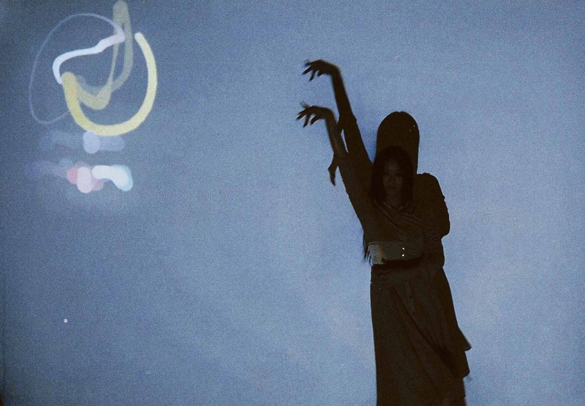
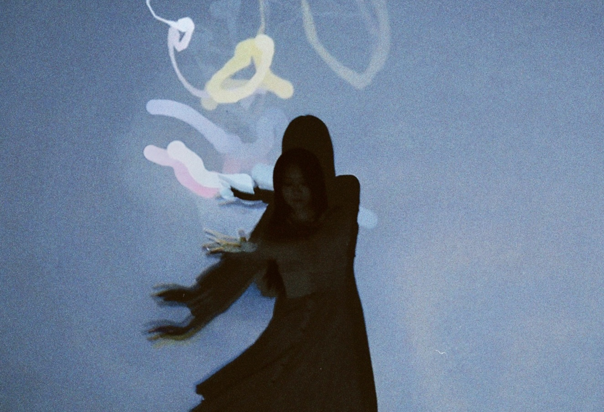
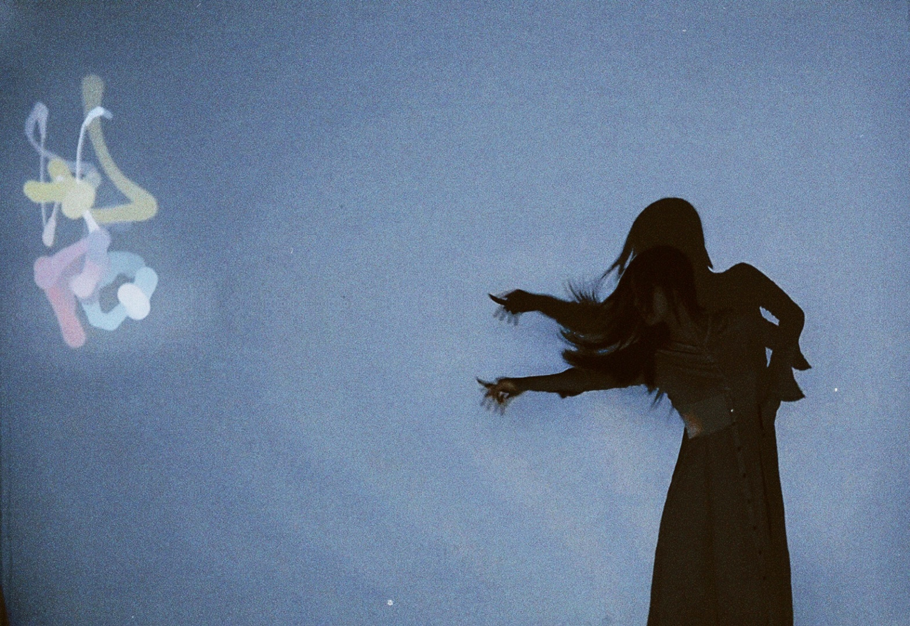
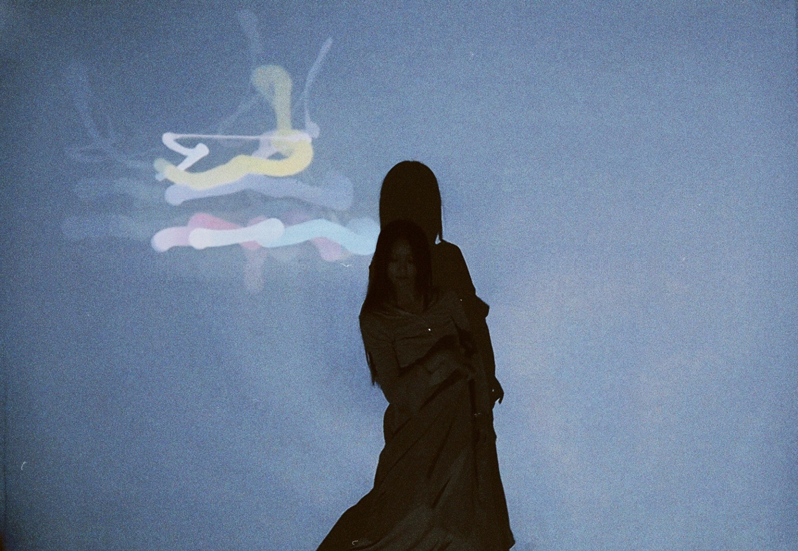
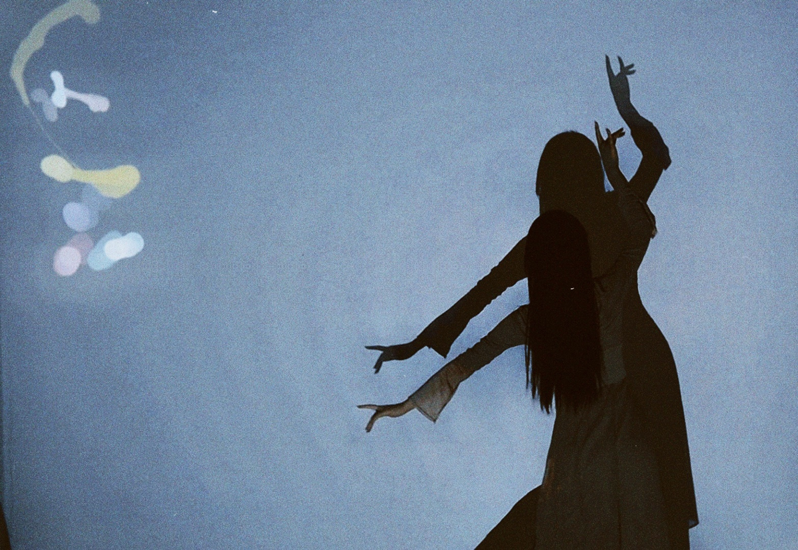
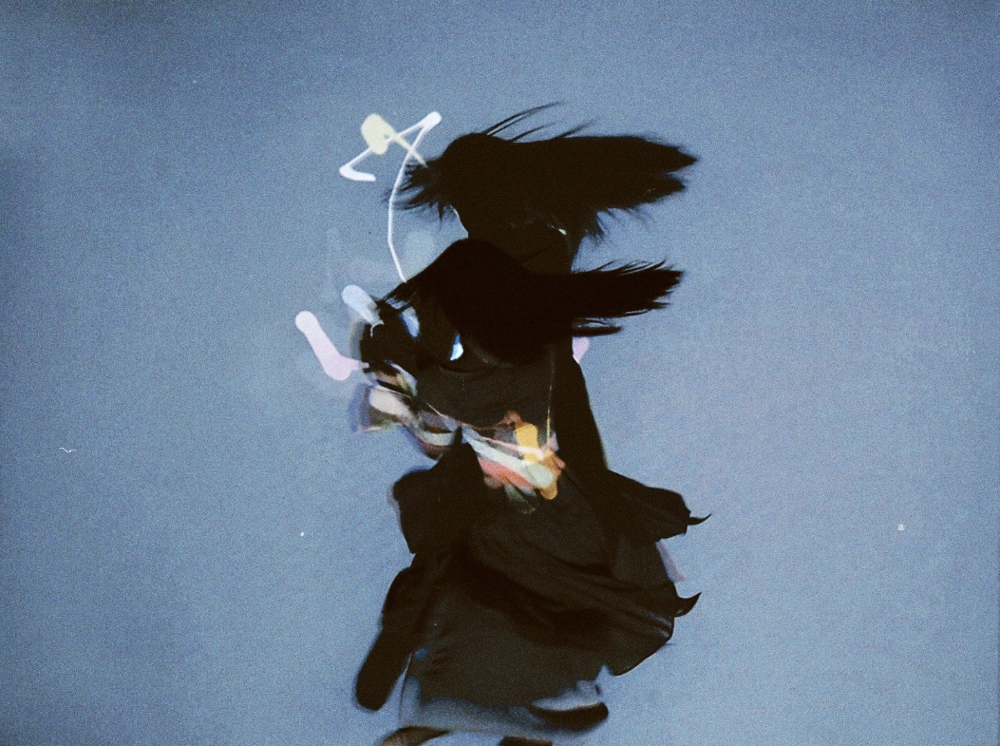
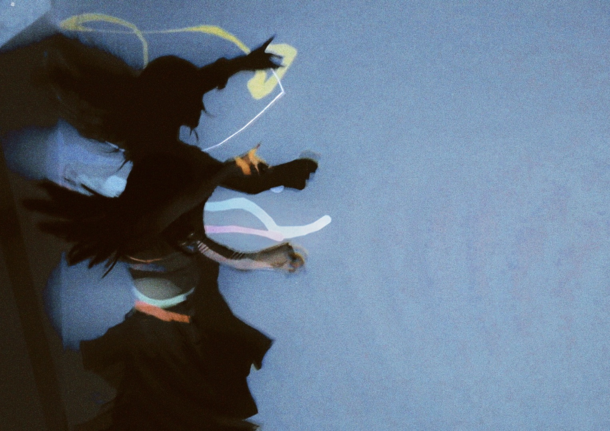
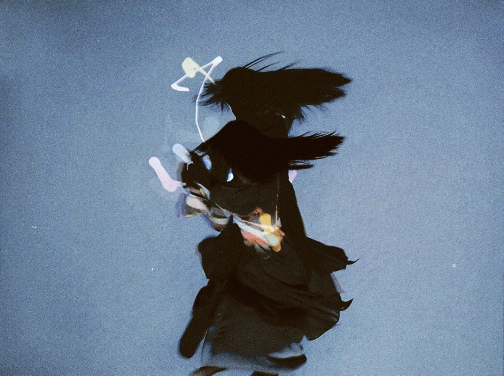
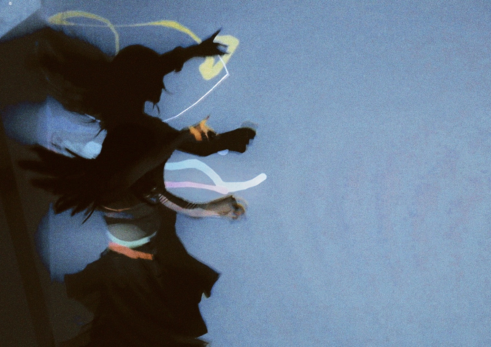

Vimeo Video
The purpose of this study is to develop an interactive performance system that realizes the translation of Chinese classical poetry text into interactive augmented reality, so as to improve regional aesthetic experience and spread Chinese classical poetry culture. Firstly, it analyzes the definition and characteristics of regional aesthetic experience, as well as the existing ways of artistic performance. Then, an interactive system is designed to transform poetry text into body aesthetic performance, including software and hardware design and prototype development. In order to verify the feasibility of the project, a prototype system based on JIANG Kui 's "Flying almond blossoms" was developed.
Images
     



"Green silk brushes low upon the mandarin ducks' bank. I think of a lady called Peach Leaf, calling the ferry then. Again, with sorrowful eyes and the spring breeze, I wait to leave. Leaning on the orchid oar, I linger for a while. In Jinling's roads, orioles sing and swallows dance. Counting the tides, I know the bitterness of parting. Fragrant grass fills the shore, but I cannot return. As the sun sets, I move my boat—where should I go?"